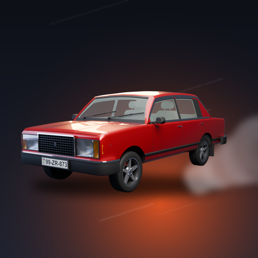

Avtosh: Baku Drift
Bakı küçələrində klassik maşınlarla drift və yarış.
Əlaqə
Xəta tapmısınız və ya fikriniz var? bahruzshabili@gmail.com ünvanına yazın; nəsə düz görünmürsə, telefonunuzun modelini də qeyd edin.
Suallar
- Necə drift edim?
- Döngəyə girin, əl əyləcinə toxunun, sonra sükanı əks tərəfə çevirin və qazı basılı saxlayın. Daha uzun və daha böyük bucaqlı sürüşmə daha çox xal verir, xallar isə oyun pulu olur.
- Necə arxaya sürüm?
- Dayanın və əyləci basılı saxlayın: bir anlıq sonra maşın arxaya getməyə başlayır. Yenidən irəli getmək üçün qaza basın.
- Yeni maşın və hissələri necə alım?
- Drift və yarışla pul qazanın, sonra Mağazadan maşın, Qarajdan isə rəng, disk, peredok, şüşə tonu və güc hissələri alın. Real pulla alış yoxdur.
- Yeni telefonda irəliləyişimi necə saxlayım?
- Ayarlar → Hesab bölməsini açın və Apple, Google və ya e-poçt və parol bağlayın. Yeni telefonda eyni üsulla daxil olun, maşınlarınız və pulunuz geri gələcək.
- Parolu unutmuşam.
- E-poçtla giriş ekranında "Parolu unutmusan?" toxunun və e-poçtunuza göndərdiyimiz kodu daxil edin.
- Dostlarla onlayn necə oynayım?
- Onlayn yarış və ya Onlayn drift açın (hesab lazımdır — qonaq hesabı da olar). Sürətli axtarış səviyyənizə yaxın oyunçuları tapır, boş yerləri botlarla doldurur. Və ya otaq yaradın, dostlarınızı ya da son oynadığınız oyunçuları dəvət edin, yaxud otaq kodunu paylaşın. Dostları Dostlar bölməsində adı və ya 8 rəqəmli oyunçu nömrəsi ilə əlavə edin. Eyni Wi-Fi şəbəkəsində internetsiz də oynamaq olar.
- Oyunçunu necə bloklayım və ya şikayət edim?
- Otaqda və ya Dostlar siyahısında oyunçunun yanındakı ••• düyməsinə toxunun və Blokla ya da Şikayət et seçin. Bloklanmış oyunçu sizi dəvət edə, dostluq istəyi göndərə bilməz və sizinlə eyni oyuna düşmür. Şikayətlərə baxırıq, təhqiredici adları, fırıldaq edən və başqalarını incidən oyunçuları kənarlaşdırırıq.
- Dili necə dəyişim?
- Ayarlar → Oyun → Dil. Oyun Azərbaycan, ingilis, rus və türk dillərindədir.
- Hesabımı necə silim?
- Ayarlar → Hesab → Hesabı sil. Dərhal silinir. Hesabı silmək səhifəsinə baxın.
- Oyun telefonumda yavaş işləyir.
- Ayarlar → Oyun bölməsini açın və Qrafikanı "Aşağı" seçin.
Məxfilik
Reklam, analitika və izləmə yoxdur. Könüllü hesab istifadəçi adını, seçdiyiniz giriş üsulunu, oyun irəliləyişini, onlayn oynasanız isə dost siyahınızı saxlayır. Məxfilik siyasətini oxuyun.